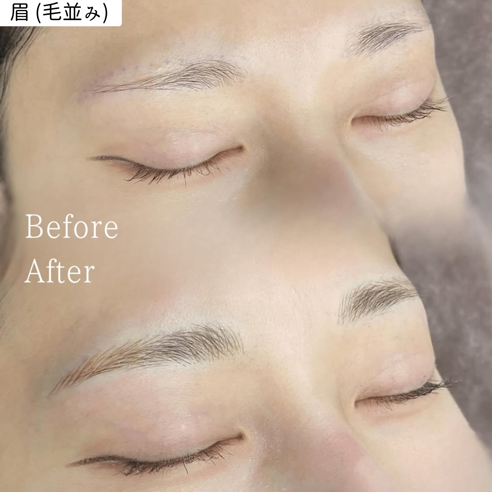

Lineup
施術ラインナップ


Art Make
眉・アイライン・リップ・ヘアライン・ヘアスカルプ・ほくろ

針がついた専用の器具を使い、皮膚に極細の傷をつけながら色素を入れる施術です。医師の管理のもと行われる医療行為で、麻酔クリームを使用するため痛みを最小限に抑えられます。
メイクの時間短縮はもちろん、汗や水に強く、24時間美しい状態をキープ。骨格・肌色・ライフスタイルに合わせたデザインをご提案します。
ご希望・骨格・肌色をもとにデザインをご提案。オンラインカウンセリングも対応しています。
ペンシルでデザインを描き、形をご確認いただいてから施術に進みます。
麻酔クリームを塗布後、施術を行います。痛みを最小限に抑えた状態で進めます。
施術後のケア方法をご説明。
アートメイクとタトゥーはどちらも皮膚に色素を入れる施術ですが、深度・目的・持続期間が大きく異なります。
アートメイクは時間とともに色が変化するため、ライフスタイルや年齢に合わせて更新できます。これが多くの方に選ばれる理由のひとつです。
持続期間は代謝・生活環境・肌質によって異なります。日焼け・サウナ・スキンケア製品によって色落ちが早まる傾向があります。
肌質によって色の入り方・定着の仕方が変わります。カウンセリング時に肌の状態をお伝えください。
※ 上記に該当する方でもカウンセリングにてご相談ください。状況によっては対応可能な場合があります。
当日はメイクをして来ても大丈夫ですか？
基本的にはメイクをしたままご来院いただいて問題ありません。施術前にメイクを落とし、デザイン確認をしてから進めます。
他院のアートメイクの上から重ねることはできますか？
状態によります。色が残っている場合はその色味が影響することがあります。まずカウンセリングで現状をご確認ください。写真をLINEでお送りいただくとスムーズです。
完成まで何回来院が必要ですか？
通常2回です。初回施術から1〜3ヶ月後に補色を行い、仕上がりを整えます。肌の状態によっては追加施術が必要な場合もあります。
未成年でも施術を受けられますか？
18歳未満の方は施術をお受けしていません。
妊娠中・授乳中は施術できますか？
妊娠中の方は施術をお受けできません。授乳中の方は、授乳が終了してからご相談いただくか、産後3か月以上経過しており施術後48時間の断乳をしていただける場合は施術可能です。
安全性・染料・禁忌について詳しく解説しています